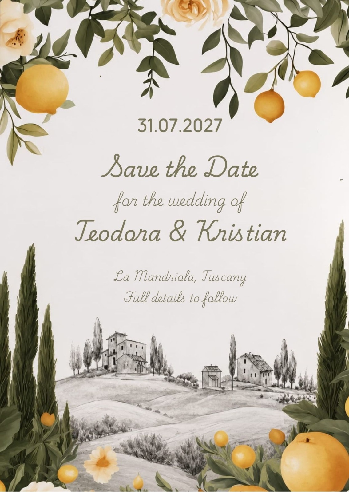

RSVP Here
RSVP HereFull itinerary to follow
Smart Formal
We kindly ask guests to avoid white, cream, or close-to-white colours.
The wedding will take place at La Mandriola in Tuscany. The venue is located approximately 1 hour drive from both Pisa (PSA) and Florence (FLR) airports.
More detailed travel guides, airport transfers, and driving directions will follow soon.
On-site accommodation at La Mandriola is limited and consists of shared apartments. We will organise room allocations based on apartment layouts and guest compatibility once RSVPs are collected, and we will confirm details directly with you.
For guests staying in recommended nearby accommodations, we will be providing transport to and from the venue for the Saturday wedding celebration.
While we love your little ones, our wedding celebrations will generally be an adults-only occasion (with some exceptions). We hope this gives you an opportunity to enjoy a weekend off in Tuscany!
Your presence at our wedding is all we desire.
We’d love to celebrate with everyone, but unfortunately we can only accommodate the guests we've formally invited.
There isn't yet a specific deadline date. Before late Februry 2027 would be great provisionally.
If you have any questions before the full details are released, please feel free to reach out to Teo or Kristian directly.